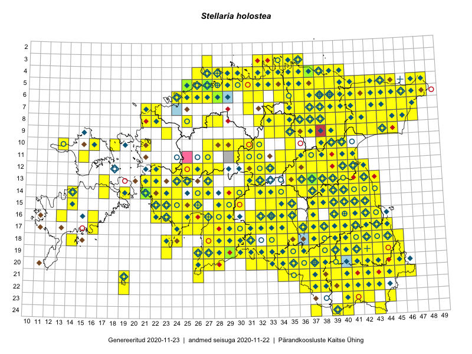

Stellaria holostea
Uuendatud: 2016-12-01
Kaardile koondatud taksonid: Stellaria holostea L.

Kaart põhineb 643 kirjel, neist vaatlusi 642 ja eksemplare 1.
Kuvatud viited 20 esimesele andmebaasikirjele, ülejäänud PlutoFis
- Malle Leht: 2015-05-22: : ala
- Malle Leht: 2015-05-16: : ala
- Malle Leht: 2015-07-09: : ala
- Meeli Mesipuu, Kadri Tali: 2015-04-30: 17-40: ala
- Peedu Saar, Timo Luhamäe: 2015-05-10: 12-31: ala
- Peedu Saar, Timo Luhamäe: 2015-05-10: 12-32: ala
- Peedu Saar, Timo Luhamäe: 2015-05-11: 11-36: ala
- Peedu Saar, Timo Luhamäe: 2015-05-11: 12-37: ala
- Peedu Saar, Timo Luhamäe: 2015-05-12: 07-35: ala
- Peedu Saar, Timo Luhamäe: 2015-05-12: 07-36: ala
- Peedu Saar, Timo Luhamäe: 2015-05-13: 06-40: ala
- Peedu Saar, Timo Luhamäe: 2015-05-13: 07-39: ala
- Peedu Saar: 2015-05-14: 09-43: ala
- Peedu Saar, Liina Oja: 2015-05-22: 19-30: ala
- Peedu Saar, Liina Oja: 2015-05-22: 19-29: ala
- Peedu Saar, Liina Oja: 2015-05-20: 18-27: ala
- Rein Kalamees: 2015-06-05: 05-32: ala
- Malle Leht: 2015-08-02: : ala
- Peedu Saar, Liina Oja: 2015-05-21: 16-24: ala
- Peedu Saar, Liina Oja: 2015-05-15: 16-23: ala